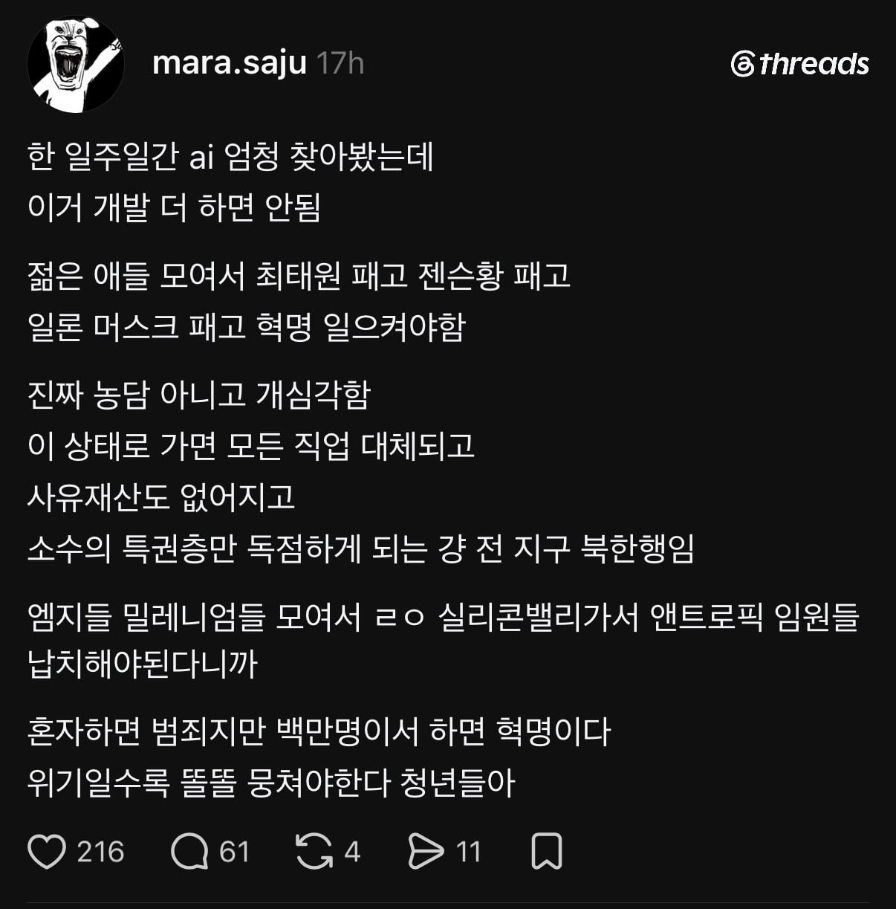

AI가 발전하면 서민들은 폭락하고 기업 특권층이 독점할거라서, 당장 빅테크 임원 납치하고 혁명해야 한다고 함 ㄷㄷ

AI가 발전하면 서민들은 폭락하고 기업 특권층이 독점할거라서, 당장 빅테크 임원 납치하고 혁명해야 한다고 함 ㄷㄷ
난 한 200만 사료로 주면 살 듯. 물론 물가상승률 반영해서 😏
진짜 걍 혼자 적적하게 살기엔 나쁘진 않은데 그 이상의 삶을 살순 없음 이건 그냥 인생 전체를 통제당하는거임
니 자체가 필요 없어지면 그것도 왜 줌? 총기 달린 드론 날려서 모조리 총쏴 죽이고 감금하면되지
난 우리의 미래가 애니매트릭스나 사이버펑크 중 하나로 갈거 같긴해.
지랄났네
아이디보니까 사주쟁이인거같은데
정작 저새끼가 ai로 사주본다고 할듯
주식을 사서 너도 특권층이되면 되잖아..?
그걸 부순다고 아 예 알겠습니다 하고 다들 멈춘다고? 경쟁자들만 오예 야르 개꿀 하고 좋아하겠지
거기다 아직도 AI는 출발선에 서있는 수준임 특이점은 아직도 멀었고 우리가 알수없는 어느순간 어느시기에 도달할테지
이미 레이스는 시작됬고 결승선이 어디있는지는 아무도 모른다
근데 이런결말도 가능성이 없진 않지
일주일이 웃음 포인트
중국 바이오ai vs 빅테크ai 개봉박두
이온플럭스처럼 갑부가 사람들 모아다가 양배추 먹이는 세계관이면 되게 건강하게 가난할듯 ㅋㅋ
아라사카 등장
문제는 ai 사용하는 기업만 초격차 벌리며 살아남겠지
21세기형 러다이트 ㅋㅋㅋㅋ
AGI가 3년내로, ASI가 10년내로 등장하면 등장하고부터 20-30년 지나면 공무원 공공기관 이런것도 의미 없어짐. 그냥 정부와 국가가 존재할 이유가 없고 AI를 통제하는 세력이 자연스럽게 모든걸 지배하게 되어있음.
미국 AI가 승리하면 월가 상류층 일부와 AI회사 고위 임직원 혹은 중국 AI가 승리하면 공산당과 그 AI 고위임직원 정도만 살아남고 나머진 다 잉여인간임. 그들의 자비가 있길 바랄뿐이지.
미국을 조지거나 중국을 조진다고 멈춰질게 아닌게 이미 가능성을 알아버린 이상 어떤나라든 또 시도할거고 어쩌면 지구에 생명이 등장하고 진화하고 인간이 탄생하고 인공지능이 발현되는 이 모든게 자연현상일 수 있음. 인간도 과정의 일부였던거고..
산업혁명시기에 초등학생도 16시간 노동에 끌려갔다던데 ai혁명시기에는 사람들이 어떻게 될지 무섭네
신기하네 하드웨어 성능은 막엄청나게 발전한게아닌데 ai는 계속 발전된다는게,
인류 문명도 계속 발전해 왔자너 신석기부터 현재까지 인류 뇌용량은 똑같은데
지금 중국 쪽은 하드웨어도 ㅈㄴ게 발전 시킴
솔직히 딥시크 쇼크 이후로는 전혀 미국 ai를 못따라가니까 그냥 하드웨어에 전념하더라 가격만 문제지 이제는 노가다 십장도 다 대체 가능할 수준임
몇천조가 투입됐는데 러디이트하면 무사하겟냐고 총쏴서 죽여버리지
ai 성공하면 노동계층은 똥만 싸고 대가리만 큰 놈들이라서 총쏠것 같은디
젊은 애들이 쓰레드 영포티들 똥닦개라도 되나 총알받이 되라 이러네 ㅋㅋ
느그 틀딱들이 하지 왜 해줘임?
러다이트운동이네?
당장 쓰고 있는 앱부터 지워보지는 ㅋㅋㅋ
미레에 어떻게 될지 무섭긴 해
패고 감금하는건 장난으로 넘기기는 한데
시대흐름이 ㄹㅇ 그렇게 갈수밖에 없을꺼 같은데
일부 독점층이 사료 뿌리고 대다수가 배급에 의존하는
동물농장같은 사회가 올꺼같아서 무섭다